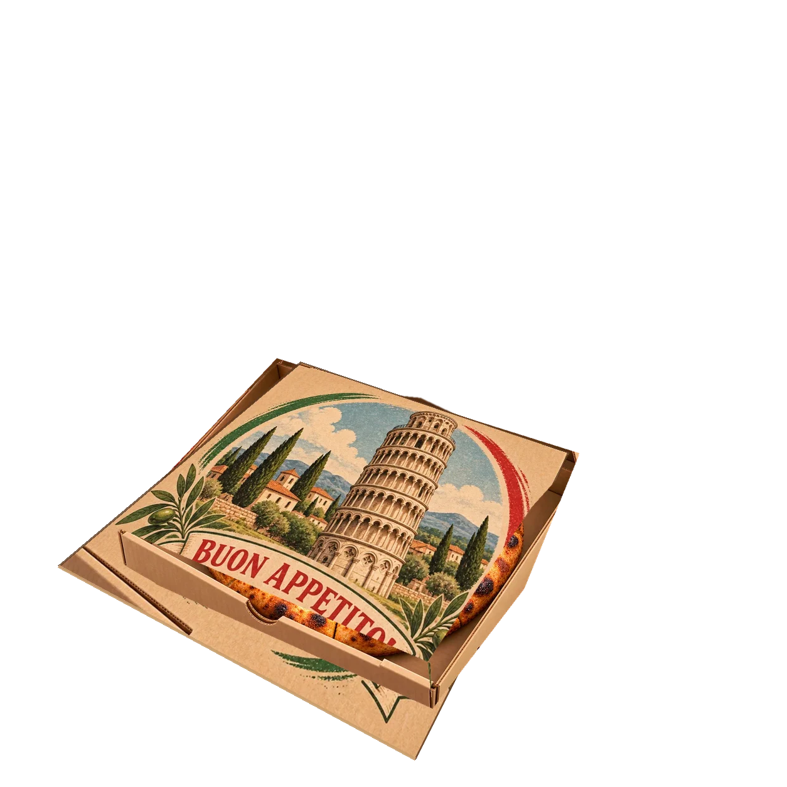

INDEPENDENT PISA QA — NOT APPROVED ARTPisa candidate: diagnostic playback only
CI 8414319186c834cad091231d6c9beed6068b5876; NOT Review v2; NOT approved for integration. These are the unmodified delivered WebPs. Reduced-motion preference is observed, not patched into the artwork.
margherita · 360 CSS pixels · candidate onlysalami · 360 CSS pixels · candidate only
quattro-formaggi · 360 CSS pixels · candidate only